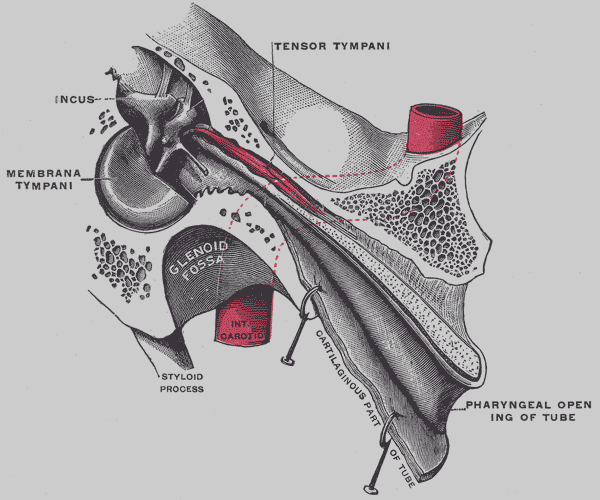

Middle Ear Myoclonus (MEM)
Middle ear myoclonus (MEM) is a rare condition where one or both of the tiny muscles in the middle ear, the tensor tympani or stapedius, begin to contract on their own. These muscle spasms can create clicking, fluttering, or thumping sounds in one or both ears, and in some cases the sounds can even be heard by an examiner using a stethoscope.
The exact cause isn’t always clear, but symptoms can be triggered or worsened by stress, sound exposure, muscle tension, or nerve irritation. Symptoms often come and go and can vary in intensity from day to day. When compared to tonic tensor tympani syndrome (TTTS), middle ear myoclonus (MEM) more commonly arises without a known cause and often occurs in the absence of prior acoustic injury.
Key features
- Involuntary muscle contractions of the middle ear muscles (tensor tympani and/or stapedius).
- Clicking, fluttering, vibration, or thumping sounds in one or both ears.
- Sounds may be rhythmic or irregular, and vary in frequency or intensity.
- May occur spontaneously or be triggered by sound, movement, stress, or tension.
- Sometimes audible to others (a form of objective tinnitus).
- Often arises without a known cause in the absence of prior acoustic injury.
- Symptoms often come and go, lasting seconds to minutes or occurring in bursts throughout the day.
- Associated with muscle irritability, nerve dysfunction, or anxiety-related muscle tension in some cases.
- Typically diagnosed via clinical evaluation and by excluding other ear conditions.
The Middle Ear Myoclonus (MEM) Support Group is a Facebook community with over 2000 members who share their experiences, discuss symptoms, and explore treatment options.
Tonic Tensor Tympani Syndrome (TTTS)
Tonic tensor tympani syndrome (TTTS) is a condition in which the tensor tympani muscle inside the middle ear becomes overactive or hypersensitive. This muscle normally contracts briefly in response to loud sounds or sudden noise to decrease sound transmission and protect the inner ear, but in TTTS, it can tighten involuntarily or remain contracted for extended periods.
These muscle spasms can lead to sensations of pain, fullness, pressure, or fluttering in the ear, and may be triggered by everyday sounds or specific frequencies that are not necessarily loud. TTTS is often associated with conditions such as hyperacusis and acoustic shock.
Key features
- Involuntary or prolonged contraction of the tensor tympani muscle in the middle ear.
- Can cause sensations of pain, fullness, pressure, fluttering, or vibration in the affected ear.
- Often triggered by sound, talking, chewing, or stress.
- Can lead to ear pain or tension without evidence of middle ear infection.
- Often develops as a result of prior acoustic injury.
- Believed to involve overactivation of the middle ear reflex and increased muscle excitability.
- Diagnosis is primarily clinical, based on symptoms and ruling out other ear disorders.

A 2019 article published by Noreña et al. describes acoustic shock and how it relates to the tensor tympani muscle (TTM). Key points within the article have been highlighted.
A 2022 article published by Fournier et al. argues that the term “tonic tensor tympani syndrome” (TTTS) should be abandoned, as the tensor tympani muscle does not demonstrate sustained contraction (tonic) in TTTS, but rather exhibits hyper-reactivity with a reduced contraction threshold.
The Tonic Tensor Tympani Syndrome (TTTS) Support Group is a Facebook community with over 2300 members who share their experiences, discuss symptoms, and explore treatment options.
Management
Treatment of middle ear myoclonus (MEM) and tonic tensor tympani syndrome (TTTS) usually begins with conservative measures aimed at reducing triggers, relaxing the middle ear muscles, and improving sound tolerance. Many individuals find relief through non-invasive methods such as stress reduction, gentle jaw, neck, and ear exercises, posture correction, and cautious use of sound therapy. If symptoms persist, medical options (medications, anti-anxiety agents, or botulinum toxin injections) can be combined with conservative care. In rare and severe cases that remain unresponsive to these approaches, surgical intervention may be considered to interrupt abnormal muscle contractions while preserving hearing.
Conservative Management
- Gradual sound exposure or low-level background noise (use caution if hyperacusis is present).
- Stress management and relaxation (breathing, meditation, gentle exercises).
- Avoiding loud/sudden auditory triggers and improving posture.
Medical Management
- Muscle relaxants, anti-seizure, or anti-anxiety medications as indicated.
- Targeted botulinum toxin injections for refractory spasms.
- Combine with conservative therapies and close ENT/audiology follow-up.
Surgical Management
- Tenotomy of the tensor tympani or sectioning the stapedius tendon in selected cases.
- Middle ear exploration to exclude structural causes.
- Reserved only for severe, refractory cases after comprehensive evaluation.
There are several patients in this spreadsheet who have detailed their experiences treating tonic tensor tympani syndrome (TTTS) and middle ear myoclonus (MEM) using medications and Botox.